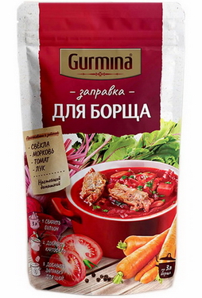
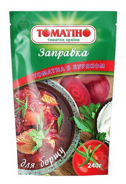

Борщ - это отличное и самодостаточное блюдо. Обычно самый лучший борщ - это тот который приходится готовить кому-то другому. Но увы так бывает не всегда, и иногда борщ приходится добывать самостоятельно.
Тут описан наиболее простой и быстрый метод добычи борща из кастрюли. Рецепт ориентирован на тех, кто хочет самостоятельно синтезировать борщ прикладывая минимум усилий.
Количества и объёмы - всё это весьма приблизительно. Идеально подходящие пропорции пользователь сможет выяснить сам при следующих итерациях.
Представленные тайминги желательно соблюдать, особенно для тех кто знаком с блюдом лишь при поедании - для таких пользователей это будет новый уровень отношений с борщом.
Кастрюля, использующаяся в этом рецепте, должна быть объёмом литров пять. В общем - чтоб всё влезло. Если нет такой - рассчитывайте реагенты как-то пропорционально.
- запастись пивом или другими любимыми напитками в количествах, достаточных для употребления в течение примерно часа, или даже полутора;
- поставить мотивирующую музыку или типа того;
- позаботиться о наличии реагентов в необходимом количестве, чтобы не бегать в магаз в процессе приготовления.
В принципе первые два пункта не обязательны, без них получится немного быстрее и дешевле, но скучнее. Вместо них можно добавить свои.
- мясо 0,5 кг - это где-то как пол-литровая банка пива по весу. Лучше говядина (кому пожирней - рёбра), но и курица вполне подойдёт (бёдра, крылья, голяшки или суповой набор). Среди рецептов можно встретить и другие виды мяса, и даже рыбу, но приоритет - это говядина или курица;
- картошка 0,5 кг - та же банка пива, +-. Габариты бывают разные, так что в штуках не буду указывать;
- капуста 0,5 кг. Надо примерно столько же как и картошки, можно отталкиваться от четверти головки небольшой капусты;
- заправка для борща 200-250 грамм. Можно сделать самому, и даже заготовить наперёд, но это отдельное исскуство. Лучше поискать в ближайшем магазине, надеясь на удачу. Иначе прийдётся возиться с зажаркой и свеклой, а это уже другая история;
 - фасоль, но это не обязательно, кому как нравится. Одна банка консервированной на 400-450 грамм. Манипуляции с сырой фасолью - гугл в помощь, это долго;
Что ещё может пригодиться (всё опционально):
- сметана (жирней - вкусней, но кому как);
- сало, засоленное идеально подойдёт;
- всякая зелень (зелёный лук, укроп, петрушка...), ещё можно чеснок;
- ну и любимый хлебушек конечно же.
- надо подготовить мясо. Его в любом случае стоит помыть проточной водой. Если говядина - порезать так как нравится, можно кубиками сантиметра по два-три; если рёбра - просто разрезать по средине между рёбрами. С куриным филе можно поступить так же, но если у вас голяшки/бёдрышки/крылышки - кидать в кастрюлю так. Суповой набор разрезать на такие части, которые представляете у себя в тарелке;
- приготовить бульён. Поставить кастрюлю, в которую всё поместится (в кастрюлю на 5 литров должно влезть), на плиту, залить туда воду 3-3,5 литра (качество воды на совести пользователя), закинуть мясо, включить на полную и периодически смотреть за процессом. Перед закипанием на поверхности бульёна будет появляться пена - её можно убрать, а можно и не убирать - в таком случае кастрюлю потом мыть будет немного сложнее, а бульён будет мутнее. Больше вреда от неё быть не должно - это вполне съедобный белок, просто может показаться некрасивым. После закипания сделать огонь на минимум, при котором бульён будет слегка кипеть, и оставить на 30 минут;
- пока готовится бульён, следует заняться овощами. Картошку надо помыть, почистить от кожуры, потом ещё разок сполоснуть и нарезать как нравится: можно как мясо, или как-то крупнее или мельче. Желательно почищенный и нарезанный картофель складывать в воду (в миску с водой например);
- с отрезанной части капусты снять пару наружных листов (на всякий случай) и вырезать кочан, сполоснуть водой, а затем нашинковать. Процедура унылая, тут главное не порезаться. Резать как нравится, удобными частями, но если этот борщ будет есть кто-то кроме пользователя, лучше помельче (ну хотяб пол сантиметра шириной);
- после того как бульён прокипел пол часа, можно к нему закидывать картошку (если она была в воде, то эту воду слить перед процедурой), и посолить заодно. Рассчёт соли: чайная ложка с горкой (не с ГОРОЙ) на литр бульёна, кому-то больше кому-то меньше, но от этого можно смело отталкиваться, главное не перестараться - в любом случае лучше потом порционально досолить, чем сразу всё пересолить. В таком виде довести до кипения (макс огонь) и варить минут пятнадцать (мин огонь);
- после того как бульён с картошкой проварится 15 минут, добавить туда капусту. Также довести до кипения и на минимуме варить минут 5-10;
- теперь можно добавить банку консервированной фасоли (400-450 грамм) и пачку заправки (грам 200-250), немного перемешать и всё так же довести до кипения и варить на слабом огне 5 минут. Если без фасоли, то то же самое, только без фасоли.
Кажется готово... Дальше только разлить по тарелкам, добавить сметанки, и положить рядом зелень, сало, часнок, хлеб, ну в общем по предпочтениям, и рискнуть попробовать.
Рецепт может и не самый лучший, но хорош своей простотой. От этого можно отталкиваться в дальнейшем. Удачки в развитии!
На всякий случай вот ссылка на сайт с борщами.